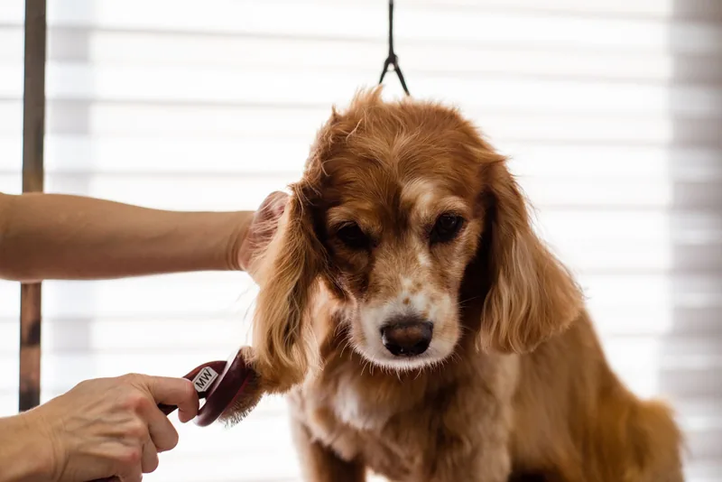
Full groom
Bath, blow-dry, full clip and style, finished with premium products — tailored to your dog’s coat and temperament.
Bath · Clip · StyleCoventry Road, Sheldon, Birmingham
One-to-one grooming in Sheldon since 2007. Specialists in anxious, aggressive and giant breeds — plus cat grooming and puppy grooms from 12 weeks.
Rated 4.8 on ThreeBestRated · 113/120 inspection points
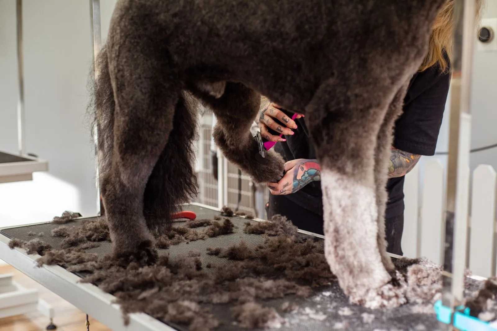
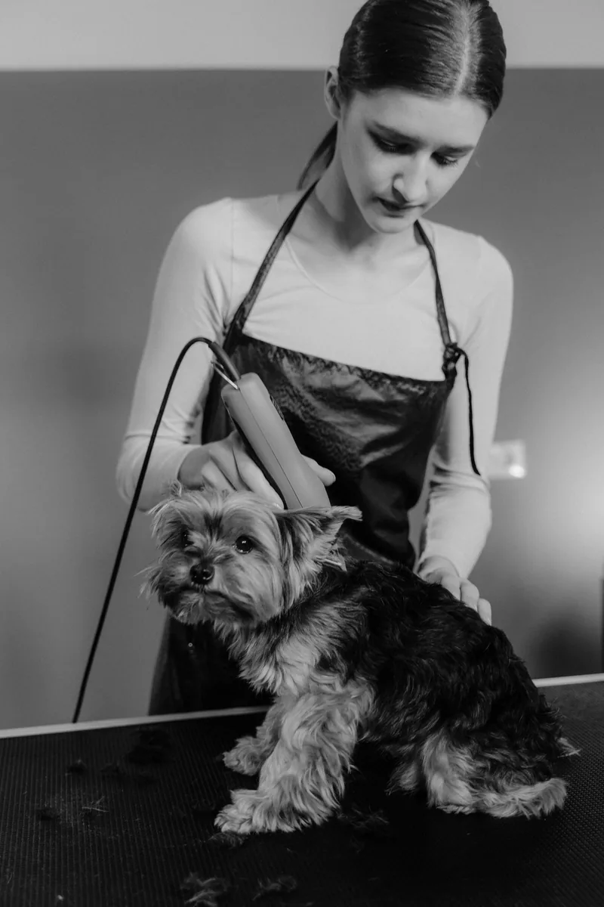
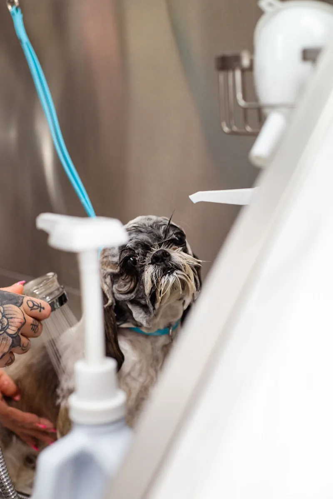
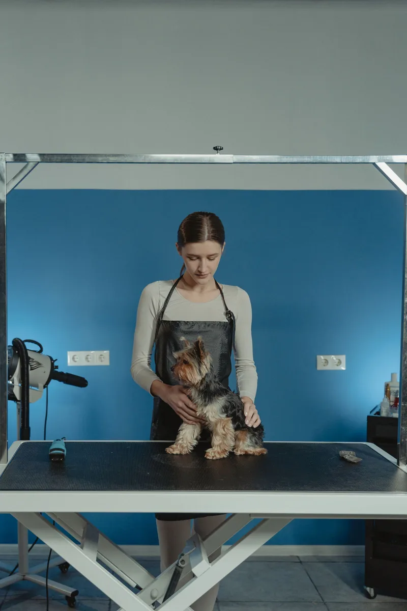
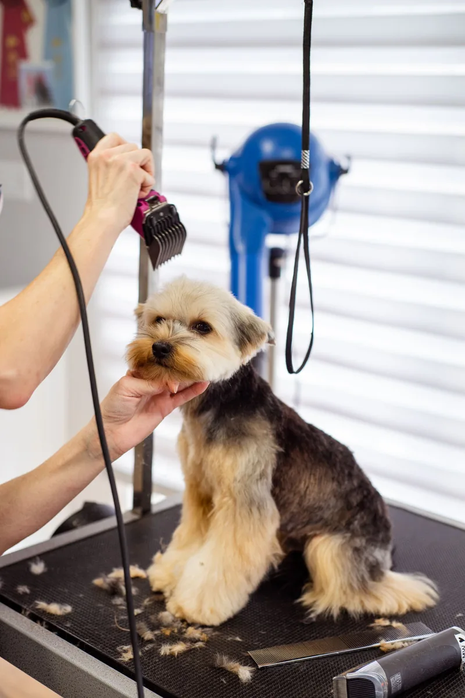
The Calm Promise
Nervous, reactive, giant or simply older — some pets need more time, more space and a quieter room. That is what Vanity Furrr is known for.
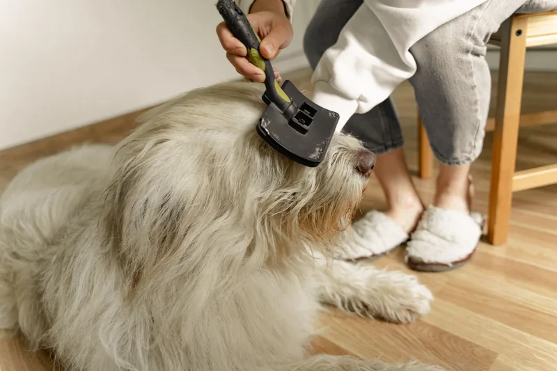
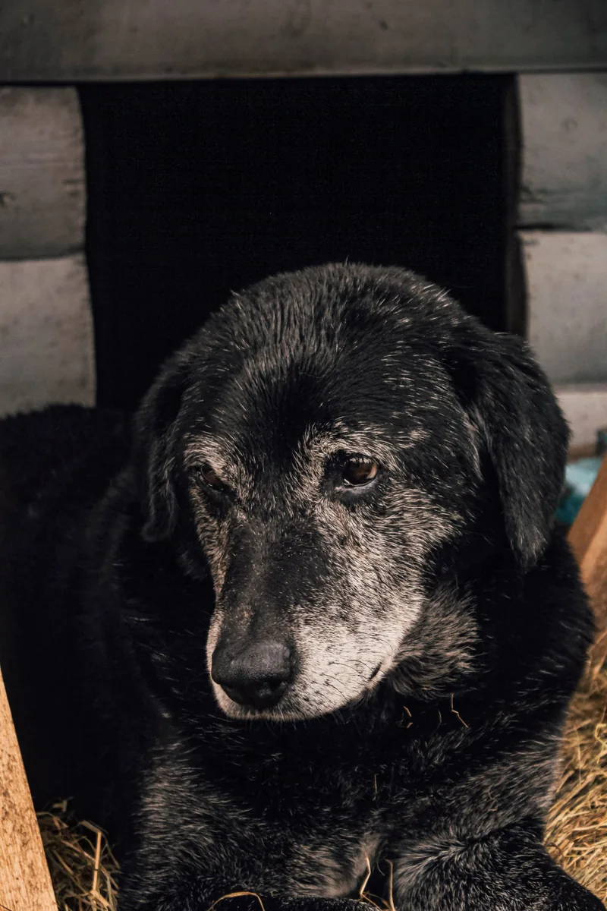
Grooming
Full grooms, baths, clips and nail care — always one-to-one, always with premium grooming products.

Bath, blow-dry, full clip and style, finished with premium products — tailored to your dog’s coat and temperament.
Bath · Clip · Style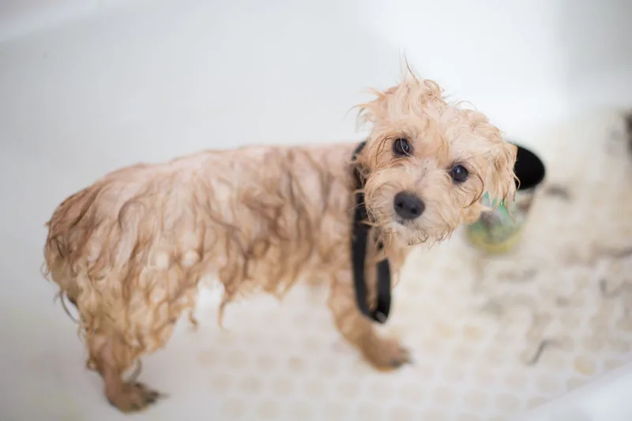
A thorough wash with premium products, blow-dry and brush-out — for dogs between full grooms, or who just need freshening up.
Wash · Dry · Brush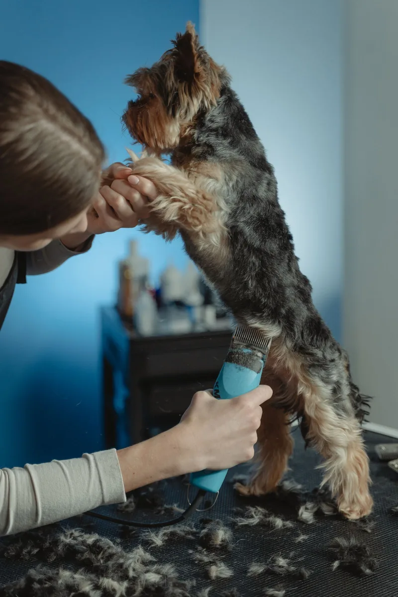
One-to-one grooming for anxious, aggressive and giant breeds — unhurried, in a quiet room, with handling that stays patient.
One-to-one · Unhurried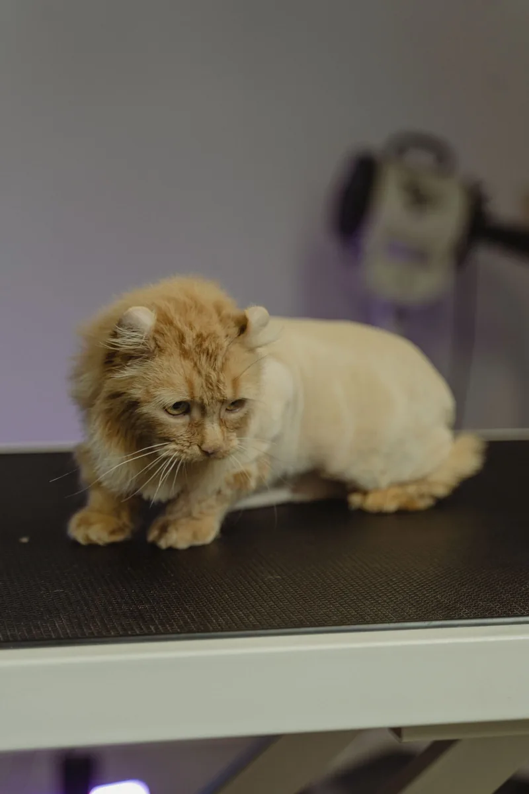
Gentle, patient grooming for cats — a service reviewers specifically praise. Cats are groomed one-to-one, at their own pace.
One-to-one · At their pace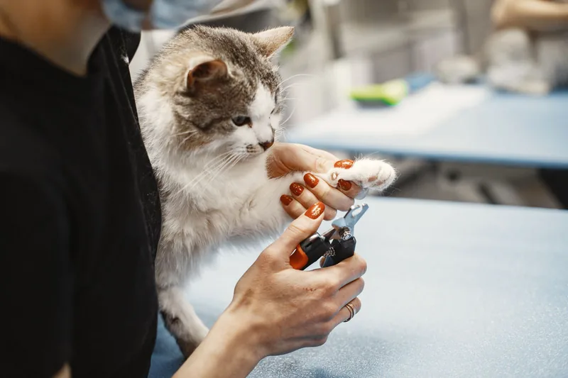
Careful nail care for dogs and cats — done without tethering, as reviewers of a 16-year-old dog’s nail trim have noted.
Without tethering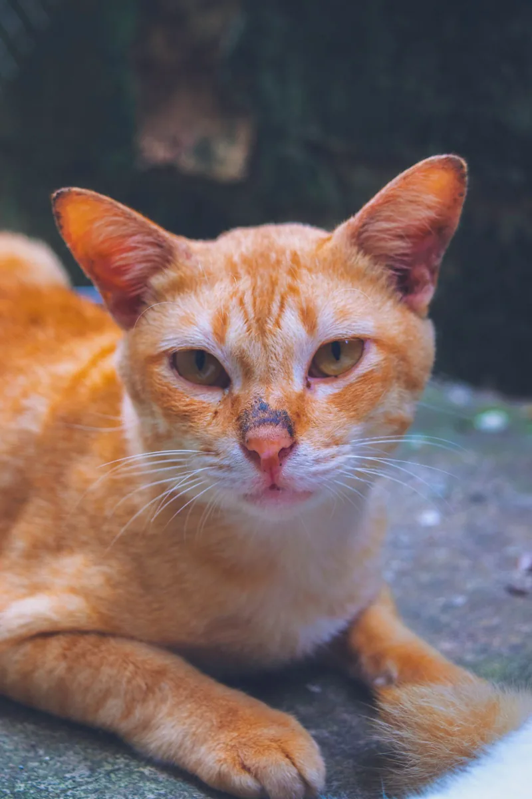
Thorough undercoat removal that reviewers praise for the difference it makes — less shedding, a lighter, healthier-feeling coat.
De-shedding · Coat care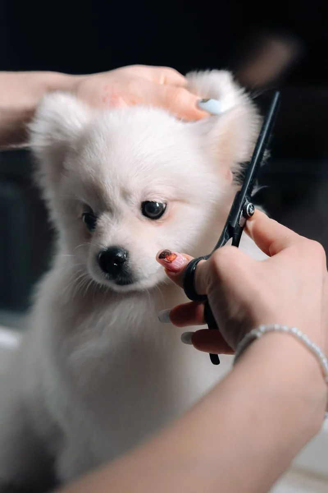
Puppy grooms from 12 weeks — a short, gentle first visit so your puppy learns that grooming is nothing to fear.
From 12 weeks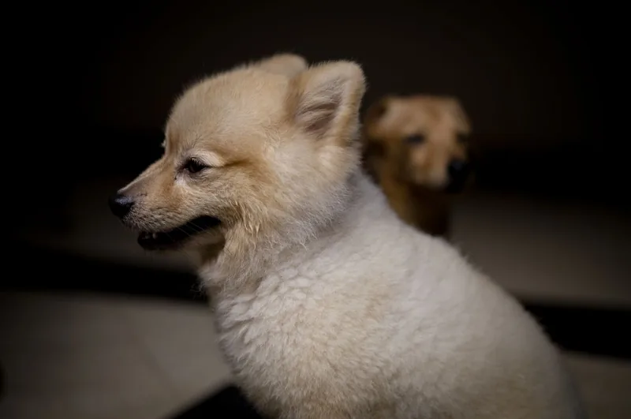
A gentle bath and brush-out for young coats — the calm start that makes every future groom easier.
Gentle · Short & sweetSwipe or scroll sideways to see every service
Signature offer
First grooms start from 12 weeks. Short, calm and unhurried — a bath, a gentle brush and a first introduction to the table, the dryer and the sounds of the salon.
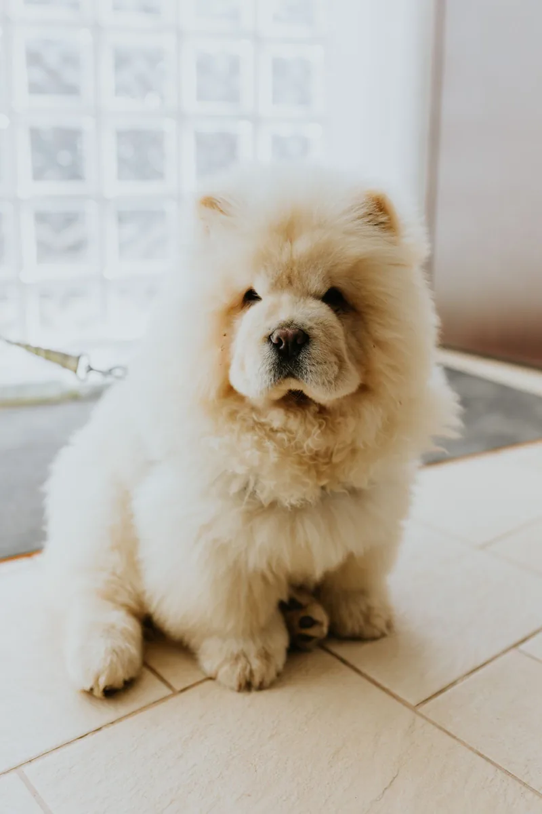
The Vanity Furrr finish
Drag the handle to compare a shaggy coat with a freshly groomed one.
Illustrative grooming results — the two photographs show different dogs, not the same pet before and after.
How a visit works
Call, WhatsApp, email or message on Facebook — whichever is easiest.
Breed, coat, temperament and anything that worries them — so the groom is planned around them.
Calm and unhurried, with premium products and no busy salon floor.
Nails, brush-out and a final check so the coat sits beautifully.
Your pet goes home looking — and smelling — amazing.
Gallery
Photographs shown are illustrative stock photography of groomed pets — tap any photo to view it larger.
Reviews
What pet owners keep coming back for — drawn from published reviews of the salon.
Reviewers praise the patience shown to nervous dogs — and to older pets, including a 16-year-old dog whose nails were clipped without tethering.
Anxious, aggressive and giant breeds are the salon’s specialism — handling that stays calm when a dog is frightened or reactive.
Cat grooming is offered — and praised. Cats get the same one-to-one patience as the dogs.
The result owners mention most: dogs that come out looking beautiful and smelling wonderful.
Undercoat removal results are singled out in reviews — a lighter coat and far less shedding at home.
ThreeBestRated score, from a 113/120 inspection — for a salon grooming Sheldon pets since 2007.
Prices
Every groom is priced on the pet — coat condition, temperament and breed all make a difference. Call, WhatsApp or email and we will give you a quote for your dog or cat.
Good to know
Yes — it is a specialism. Vanity Furrr grooms anxious, aggressive and giant breeds one-to-one, in a quiet room, at the dog’s pace. Tell us about your dog when you book so the groom can be planned around them.
Yes, cat grooming is offered and praised by reviewers. Cats are groomed one-to-one, gently and at their own pace.
Puppy grooms start from 12 weeks old. The first visit is short and gentle — a bath, a brush and a first introduction to the table and the dryer.
Yes, nail clipping is available for dogs and cats. Reviewers note it is done without tethering — including for a 16-year-old dog.
It depends on your pet’s coat condition, temperament and breed. Get in touch by phone, WhatsApp or email and we will give you a quote for your dog or cat.
Call 07515 703290, message on WhatsApp, email vanityfurrr@gmail.com or message the salon on Facebook. Or use the booking form below.
Visit & book
Book by phone, WhatsApp, email or Facebook — or send the form and we will get back to you.